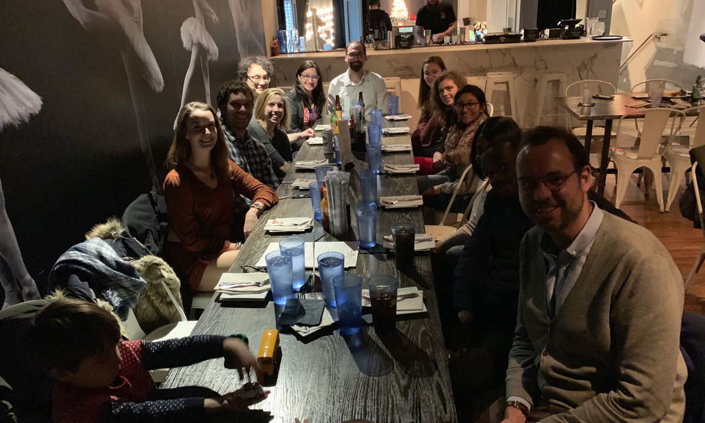
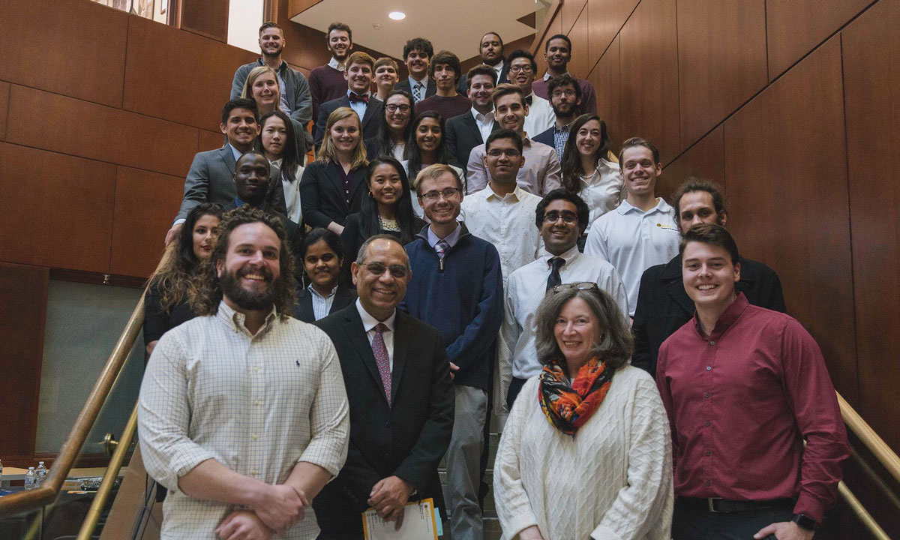

To celebrate the end of the Fall 2018 semester and the holiday season, we had a get together at local asian-mexican fusion restaurant Wong Gonzalez. Big thanks to all the students and significant others and who found time to come to this event.
Great news! Our project entitled “Anatomically-realistic image-based 3D- printed models of congenital heart disease for better surgical planning” has been approved for participation in the 2019 Dean’s Undergraduate Research Initiative (DURI) program. This is a collaboration with Drs. Scott Gullquist and Thomas Yeh from Children’s Hospital of Richmond. VCU College of Engineering intramural funding support to undergraduate MNE student Anthony Gonnella is greatly appreciated. Welcome to the team Anthony! More information about our DURI program.

BME Sophomore Madhura Managoli, member of the ETM3 VIP team, presented a poster at the symposium on her work with PhD student Sarah Saunders developing our seed-and-culture bioreactor for static incubation of engineered tissue vascular grafts. More information about the Undergraduate Research Symposium.
Great news! Dr. Joao Soares was chosen to be part of the ASME-SB3C Student Paper Competition Committee. This committee organizes the student paper competitions (BS-level, MS-level, and PhD-level) at the Summer Bioengineering Biomechanics and Biotransport Conference. The competition is a great showcase of the work that our students do, and certainly, a very nice way to reward them. More information about the SB3C.
The CMBBE is one of the most significant conferences in Computational Biomechanics and Biomedical Engineering and showcases the best research in the field. More information about the CMMBE2019.
Our lab has formed a VIP team with a general project entitled “Bioreactors for mechanical training of engineered tissues” has started. We welcome two students, Sam Cole (MNE junior) and Madhura Managoli (BME sophomore) to our team! More information about the VIP program and our VIP team.
Our project entitled “Modeling & Design of Biodegradable Scaffolds for Engineered Tissue Vascular Grafts” was approved! This project counts with the expertise, collaboration, and mentorship of Dr. Gary Tepper (MNE) in electrospinning of polymers. We do appreciate VCU’s intramural funding support!
Shivani Kundalia and Katy Werwath, both 12th graders from Maggie Walker’s Governor's High School, will join the ETM3 lab for the academic year 2018-19. More information about our DERI program.